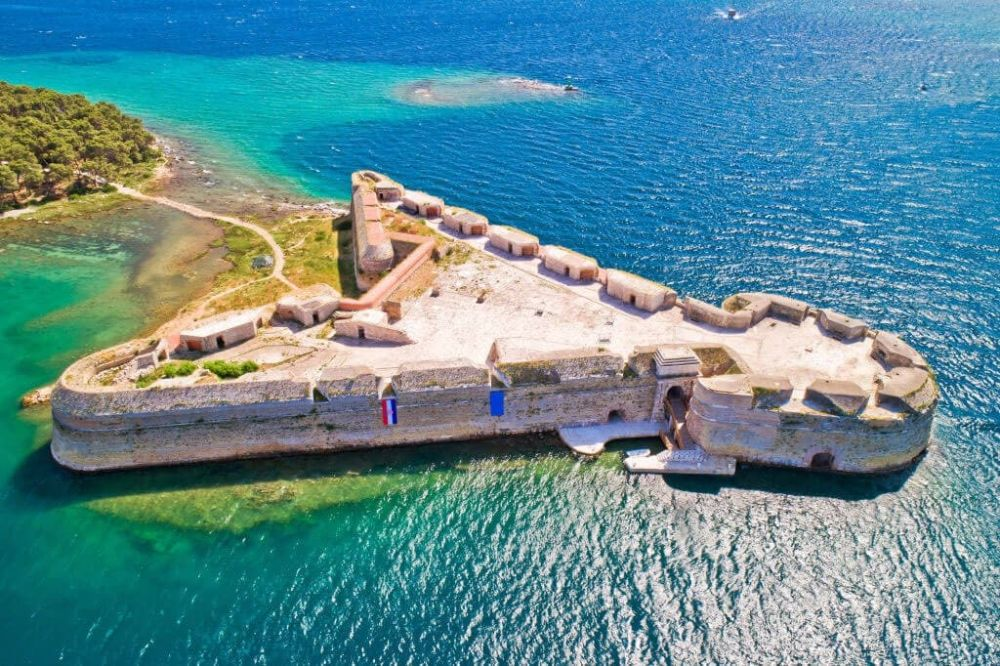

Descoperă orașul Šibenik - O călătorie în Croația
Šibenik este un oraș istoric și cultural din Croația, oferind o varietate de atracții interesante pentru vizitatori:
-

Catedrala Sfântul Iacob din Šibenik - Capodoperă arhitecturală
Vizitați această catedrală unică, inclusă în Patrimoniul Mondial UNESCO, cu detalii arhitecturale impresionante.
-

Fortăreața Sfântul Mihail din Šibenik - Panorame și istorie
Explorați această fortăreață și bucurați-vă de priveliștile spectaculoase ale orașului și a mării.
-

Centrul vechi al orașului Šibenik - Patrimoniu istoric
Plimbați-vă pe străzile înguste ale centrului vechi și admirați clădirile istorice și farmecul medieval.
-

Grădinile din Šibenik - Relaxare în natură
Relaxați-vă în frumoasele grădini ale orașului, departe de agitația urbană.
-

Plajele din Šibenik - Relaxare pe plajă
Bucurați-vă de plajele pitorești și apele cristaline din împrejurimi.
Concluzii
Šibenik oferă o combinație captivantă de istorie, cultură, peisaje și relaxare pentru vizitatori.